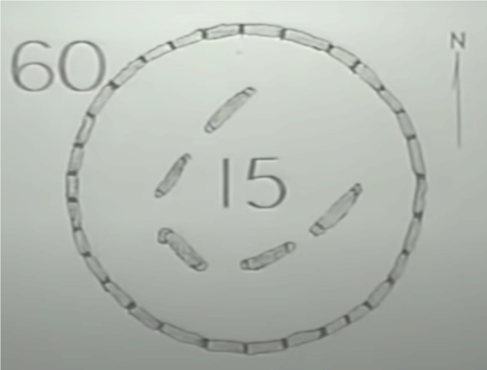
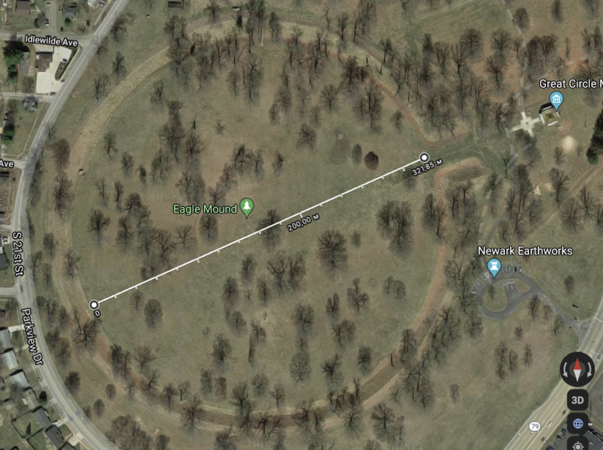
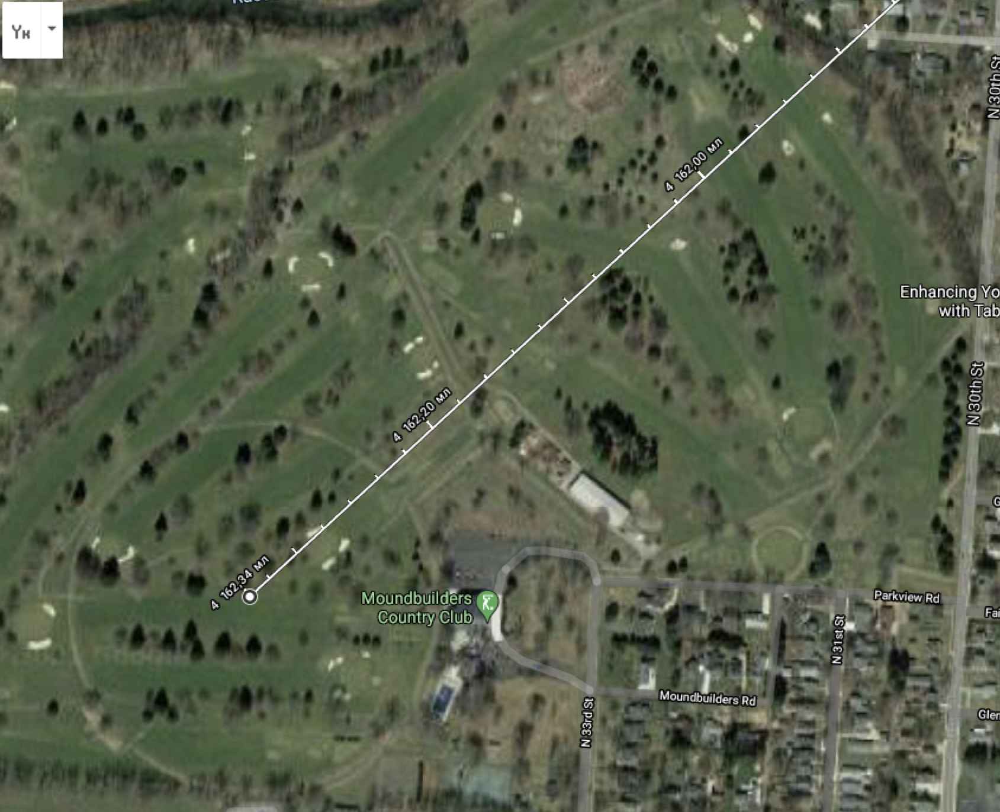
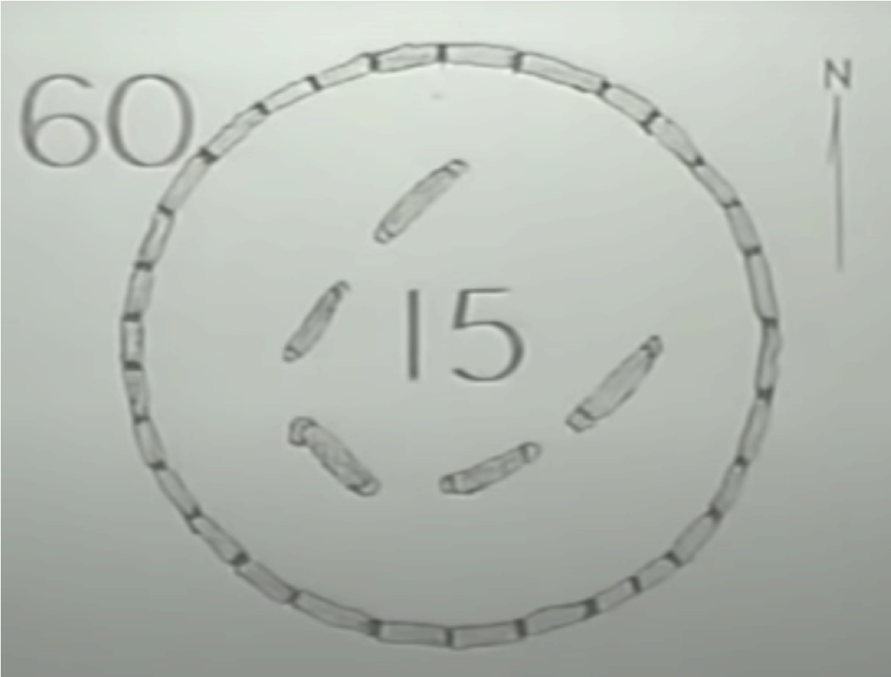
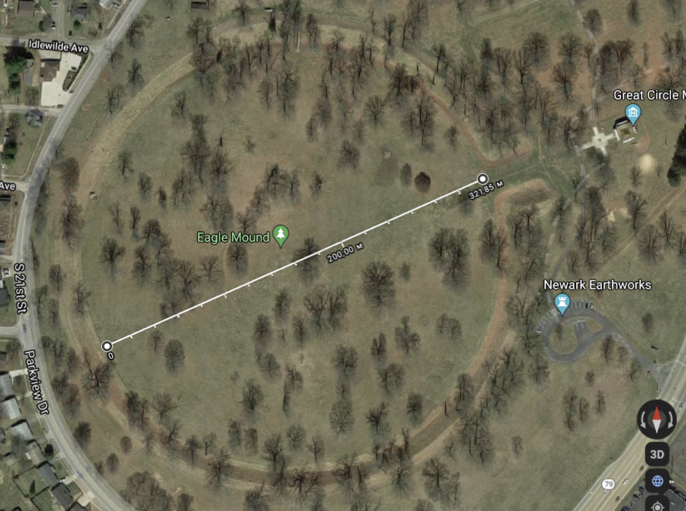
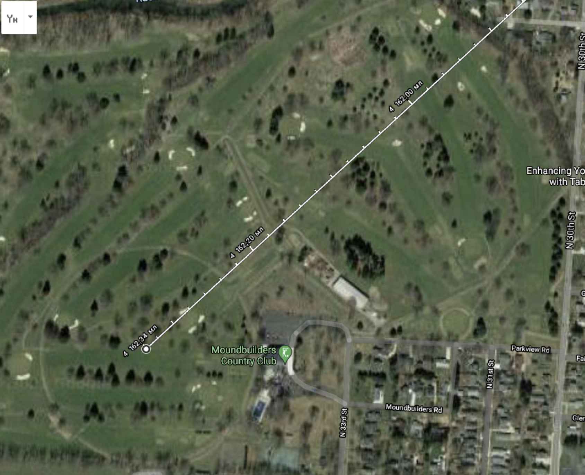

What should 60 stones around the perimeter of the circle tell us? They are folded in a perfect circle (360 degrees). Could the creators of Stonehenge calculate 360 degrees in a circle the same way we can? For now, we can answer that with confidence.
360 degrees and 60 stones are a simple mathematical equation.
What were they trying to convey with this number? Is it just a game of numbers? But in it three other numbers - 51, 10 and 42,35 are very subtly hidden.
Geodata will tell us that 51.10.42,35 are the coordinates of the latitude that passes through the center of the circle. We studied what was shown, substituted the numbers into the equation, and Stonehenge calmly explained where he was. With this discovery, it turned out that they used the same 360-degree system as our civilization working with circles.
Another system of calculation known to us is the decimal system of numbers. Did they have the same calculation system? All we need is to ask. However, we must use their language to get the right answer. Stonehenge showed us the number 21,600 as the exact latitude coordinate north of the equator, the only number that encrypts 51 degrees 10 minutes 42.46 seconds.
If they wanted to talk about the decimal number system, all they had to do was build a system of circles at latitude or longitude 2160 or 216000.
The architecture of Stonehenge, according to archaeologists, is a three-layer composition, and according to official history, Stonehenge was built in 1750 AD. The first layer was built a thousand years earlier - an earthen rampart with a diameter of about 228 feet. This is an important observation, because the creators have built other analogues of Stonehenge around the world. There are at least two of these in North America in Newark, Ohio.
Almost a complete copy of Stonehenge but without stones. The circle is 1,050 feet in diameter, or 1/5 mile. The original name has not been preserved, this object is called - a fort built by the Indians. However, there is a lack of logic - the Indians did not build forts, they attacked them.
Looking at the map we will see that through the center of the circle is the latitude 40.02.27.00 north of the equator. And these numbers multiplied by each other are exactly 2160, or 1/10 of the 21600 latitude of Stonehenge. This is a decimal number system explained by circles in a comparison format. Of course many can say that it's all a coincidence and nothing more. Especially since the official history of North America shows that the Indians were unfamiliar with mathematics, geometry and the decimal number system, and even more so did not have the alphabets we know now. However, they (and they could not be Indians at all) had an alphabet, and it was geomathematics. And to prove it, and to make it easy for us to understand in our time, they built another artifact, next to it in Newark.